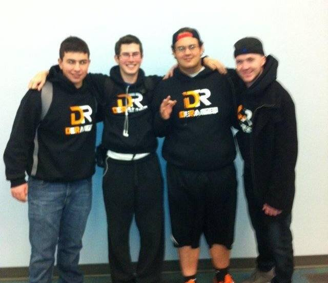
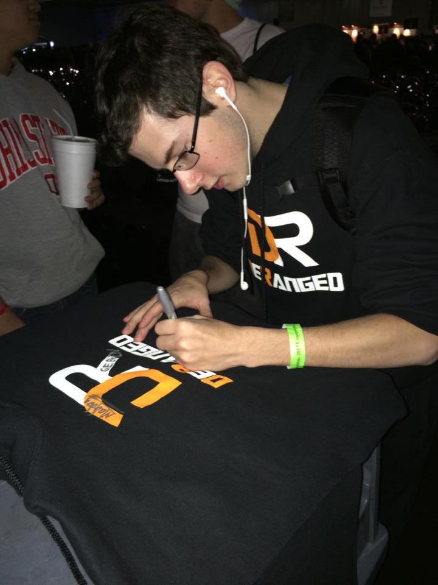
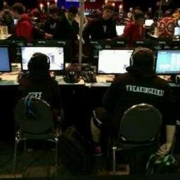

About DeRanged Gaming
DeRanged started off like many other competitive teams - the love for playing Call of Duty with friends. The team started off as me (Fury), Excel, Savvy, and Renegade. We were all playing public matches on Modern Warfare 2 one day when Excel brought up a site that allowed you to play competitive matches. The site was called Gamebattles, and like any other pub star team we went in being extremely confident. We won our first match, then went on a tremendous losing streak. No matter, win or lose, we were having tons of fun, and those moments forever changed us as people and players. For the rest of MW2 we continued GB'ing, and into Black Ops we did as well. In Black Ops we began scrimming other teams. We played so many GB's that we made it into the Black Ops Spring League playoffs, and then into the playoff bracket we made it T12. This was one of the best memories I have of playing Call of Duty to the day. Moving towards MW3, most players on the team lost an interest in playing Call of Duty which unfortunately meant that I had to search for a whole new team. This led me to find a couple of really good teammates that I would soon call my closest/best friends. I met FreakinGeekin who is currently on the roster today, and SlimChance who is helping put this site together and creates content on our team YouTube. So as MW3 played through, there were no real LANs we could go to as a team so the team took a lot of breaks periodically and the roster changed frequently. Moving to Black Ops 2 the team was very excited to attend their first ever LAN at UMG Chicago 10k. The team consisted of Fury (me), Excel, Slim, and we picked up a 4th with two weeks until the event, Fizeek. The LAN was a lot of fun but didn't yield the best results. After the event unfortunately Slim and Excel took a break from gaming to focus on school and other activities. This left me to find a new roster as we had our eyes set on MLG Dallas. I ended up picking up FourCylinder, Tragic UnL, and Rossupial. We scrimmed for a couple of weeks going into MLG Dallas, and we all had high expectations. The LAN was incredibly fun and we placed fairly well. Out of 200 teams we placed 45th. This was a phenomenal event for DeRanged, but due to different visions for the future roster this team, again, split up. At the end of Black Ops 2 I picked up Changler (a close friend/teammate) and I was reunited with FreakinGeekin who brought his teammate Static Klipz. We focused hard and long on practicing with this team for MLG Columbus. Going into MLG Columbus we felt the most confident we've ever felt. We ended up placing 37th overall which is a great improvement from our last MLG placing. Right now the team continues to practice with the roster of Fury, FreakinGeekin, Changler, and Deviate. We are looking forward to going to MLG Anaheim in July and placing even better there!
Carson "Fury" Glisson
Hey guys, my name is Carson "Fury" Glisson and I'm the captain/owner for DeRanged! I play the role of slayer in domination and obj on blitz. I started playing competitive Call of Duty, like everyone else, with some of my best friends. They introduced me to GameBattles where competitive Call of Duty players can create matches and compete amongst each other. Once I started playing competitively I was instantly addicted. I eventually surpassed my friends in skill and love for the game, and sadly parted ways with them. That's when I started my own team/company named DeRanged. Over the next couple of months I tried out team after team finding a lot of great people and making a ton of new friends. During this time I found a great friend who is making this website all possible, Tegan aka Slimchance. I eventually found one of my best friends named Nate, or FreakinGeekin. I've been teaming with Nate for about 3-4 years now (which is absolutely insane)! Then eventually we came across Changler and knew instantly we all had something very special together, we all had amazing skill and passion for the game. We are currently looking for the right fourth that fits into our team. Once we do we will be unstoppable! Outside of gaming I love to do a lot of different things like play and watch sports, hang out with family and friends, and play different types of video games. My favorite sports teams are the Chicago Blackhawks, Bulls, Cubs, and the St. Louis Rams. I am currently 19 years old and am attending a community college where I hope to transfer out after this spring semester. Some of my favorite games, outside of Call of Duty, are Grand Theft Auto, League of Legends, and any sports games really! If you have any questions for me please feel free to ask me and I will gladly respond ASAP!
Nathan "FreakinGeekin" Howard
Hey everyone! I'm Geekin aka FreakinGeekin, actually named Nathan Howard. Basically the way I got into the Call of Duty Shen Digg is Halo. I started playing in Halo tournaments at my local game shop when I was about 15 years old. I grinded Halo from that point forward doing various tournaments and GBs. When Black Ops 1 came out, my local game store had a 2v2 and I went to watch two of my good friends play in it. One ended up leaving before it started and we ended up winning. Then I started getting heckled by my friends to start playing CoD. I put it off until Modern Warfare 3, where I met Carson. Tyler Halterman a close friend of mine introduced Carson and I. From that point forward Carson and I have teamed for the most part ever since. Then MadDog came into the picture and we decided to try and make something of what most people think is a joke. Over the years Carson, MadDog, and I have been doing our best to brand DeRanged. When I'm not at home mashing buttons and making loud, obnoxious callouts, I'm with my friend playing any type of sport. I also play WoW and League of Legends(@ me if you wanna play I'll add you). That's about it for me, anything else that you want to know, don't be afraid too ask! Thanks for all the support! Geekin out ;).
Hunter "Klipz" McKee
Hey everyone Hunter "Klipz" McKee here and I'm the Sub-Sniper for team DeRanged. I got into the gaming scene at the age of 2 when I got my first PC game "Vietnam Black Ops". I've been playing video games 12 hours a day since. I got into competitive gaming around the age of 4 when CS:1.6 came out. I started playing with DeRanged in the Summer of 2013 and played with them at Columbus. They dropped me after Columbus to look for someone else and sure enough 3 months later, I'm playing with them again. I'm into football, Runescape, and Counter-Strike. I'm a die-hard Raider's fan and have been since the moment I could understand football. I nerd out on Runescape and Counter-Strike in my free time.
Edgar "TheoN" Higareda
I've been playing Call of Duty since Call of Duty 4. At first I played only public matches and like about the last year that Call of Duty 4 was on the circuit is when I started to get into Gamebattles. All I played on Gamebattles was Search and Destroy. I didn't know anything about the competitive side (MLG, etc). All I knew was that I was able to compete against people for a top standing. As well I did the same through Modern Warfare 2 and Black Ops 1. Modern Warfare 3 came out and that's when I started to hear that they were having Local LAN's in SoCal. That's when I started to play competitive. My first LAN was the LAN I will never forget because it made the gamer I am now. I went to MLG Anaheim for Black Ops 2 and placed Top 30.